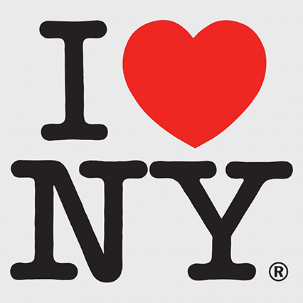
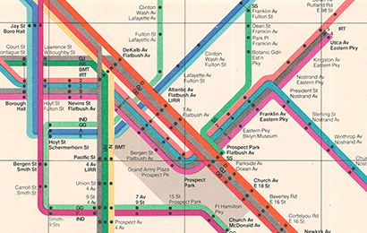

home
inspiration
top fives
My name is nayeli nieto
these are a few artists who inspire me
milton glaser

milton glaser was a graphic designer from the bronx, new York. Its highly likely that you've seen his designs at least once in your life. he created the iconic i love new york logo and the logos for dc comics. what i like about Milton's designs is that he enjoyed creating designs that took some work to understand what you were looking at.
the vignelli's

iella and massimo vignellli were born in Italy but were based in new york. the vignells were an iconic design couple that created a variety of logos such as american airlines and bloomimgdale's. they also designed the new york city subway map. the vignelli's did not identify as just graphic designers, they believed that you should be able to explore all forms of design and not just stick to one.
dieter rams
dieter rams is known to be one of the first designers to advocate for sustainability in products. rams believes that good design is all in the form, color and construction. he also says that design is more than just aesthetics and if it lacks usability then the product is useless. rams has ten design principles that have influenced and shaped modern design.